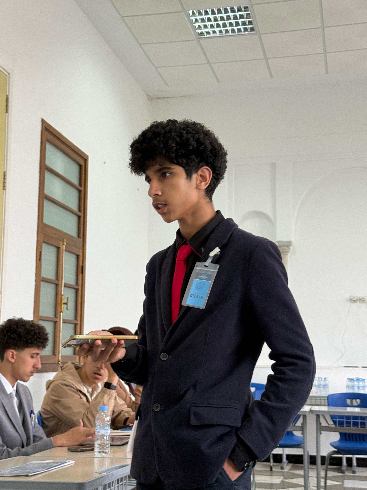
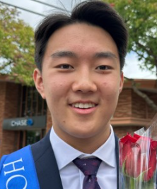
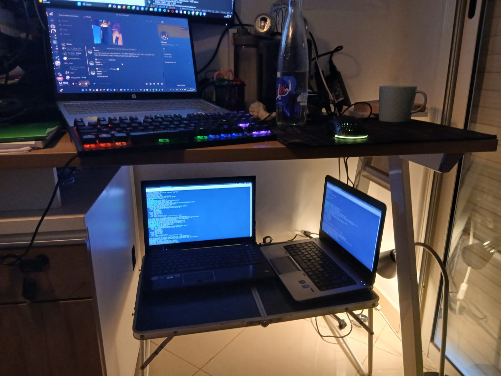

A calmer place to study & focus
Focus, made effortless .
Adam Saoudani · co-founder
RallyAI
The problem
Focus is breaking.
~47s before we switch screens, on average (vs ~2.5 min in 2004)
~23 min to return to the original task after an interruption
residue switch tasks, and part of your attention stays stuck on the last one
Starting is hard. Staying is harder. Doing it alone is hardest.
Sources: Gloria Mark (UC Irvine), Attention Span (2023) · Sophie Leroy (2009)
The solution
Meet Nook.
A calm focus ecosystem: slip into focus with the least friction, and stay there. Three ways in.
Calculus grind 🎙️
4 in voice
Rooms.
Next sprint · live
12:00
37 focusing now
Sprints.
Live demo on screen · grounded in decades of focus research (appendix).
The AI
Calm AI, in the periphery.
Focus session signals on what helps you
→
Nook learns your best times & structures
→
Calm insights for you, schools & companies
"Intelligence that protects your attention, not competes for it."
On the roadmap, built on opt-in, anonymized focus signals.
Validation
They said it. Then they used it.
Discovery · 50+ interviews
35+ of ~50 students & developers (70%) reported recurring focus & accountability struggles.
Most patch it with Discord, Pomodoro timers, study servers, music, group chats.
Many didn't know a dedicated focus platform could exist.
Usage · ~10 early testers
Repeat use of focus rooms, not one-time trials.
Reported improved focus and willingness to study during sessions.
Their feedback shaped Nook's room-based accountability.
Early stage. Next: weekly active users, 7-day return, and room-session counts.
Business model
Free for people. Paid by institutions.
Free for individuals, that's how we scale.Paid by schools & companies (the focus layer).Insights , anonymous and only with permission, never personal data.
Proven shape: Duolingo (free → Schools + English Test) · Grammarly (free → enterprise).
More free users
↓
More focus & friction data
↓
Better AI + sharper insights
↓
More valuable to schools & companies ($)
↺ funds free B2C
Moat
An edge that compounds .
A unique focus dataset that compounds with every session.
Privacy-first : a trust advantage rivals can't copy.Built on FERPA · COPPA · GDPR · CNDP principles.
Privacy is the moat .
moat: a durable edge competitors can't easily copy.
The team
Two builders.

this is mee :)
Adam Saoudani
Co-founder · product, infra & brand
Full-stack builder Self-hosted infra · $0
Builds Nook end-to-end, and lives the problem as a student.

Aaron Zhu
Co-founder · ECE @ CMU
USACO Platinum Eng intern @ Pingo
Elite competitive programmer. Drives Nook's AI & engineering.

Built scrappy. Cross-network voice, self-hosted on two old laptops for $0 .
The vision
One calm focuseverywhere .
Free for every person who wants to focus. Quietly powering the schools and companies around them.
saoudani.adam@gmail.com · nook-study.vercel.app
Appendix · Why now
We focus better together .
Decades of research: we often perform better when working in the presence of others (social facilitation).
"Study with me" is now culture, with over 12 billion views on TikTok alone.
Remote & hybrid made self-directed focus everyone's problem.
Calm-tech & digital wellbeing have gone mainstream.
The demand for calm, shared focus is already here. The tool isn't.
Robert Zajonc, Social Facilitation (1965)
Appendix · The science
Built on the research.
When we switch tasks, part of our attention stays stuck on the previous task.
Leroy, 2009 After an interruption, it takes ~23 minutes to return to the original task.
Mark et al., 2008 We often perform better when working in the presence of others.
Zajonc, 1965 (social facilitation) Simple "implementation plans" increase goal completion.
Gollwitzer, 1999 Notifications can reduce performance even when you don't respond to them.
Stothart et al., 2015 Autonomy and choice improve long-term motivation.
Deci & Ryan (SDT)
Appendix · Market
Massive market. Clear beachhead.
$450B+
Global EdTech + Productivity
Education tech, learning platforms & productivity software.
$30–76B
Digital Learning & Study Tools
Students using study tools, focus & learning apps.
$1–3M
Initial beachhead · ARR
First 100–250 schools with paid student seats.
Bottom-up SOM
100 schools
× 500 students / school
× $20 / year
= $1M ARR
from just the first 100 schools.
Nook doesn't need to win the entire productivity market. Capturing a tiny fraction of students seeking focus and accountability is a venture-scale opportunity.
Sources: HolonIQ (Global EdTech) · Grand View Research (Productivity & EdTech Software).
Appendix · Execution
One step at a time.
Now.
MVP live: Focus, Sprints, Rooms + $0 self-hosted voice. Growing with students.
Next.
Multi-platform (mobile + desktop) and the calm AI layer.
Then.
B2B: schools & companies + the insights product.
Traction: feedback from 50+ developers & teens (Hack Club community) + mentor & adult input.
Appendix · How the AI works
The focus loop.
Signals session length, time of day, completion, who's in the room
→
Learn a contextual bandit + light ML find what helps you focus
→
Nudge a gentle, well-timed suggestion (best slot, ideal length)
every session sharpens it
An on-device language model turns each nudge into calm, human words. Nothing leaves your device. B2B insights stay aggregated and anonymous.
Today: simple stats on focus behavior. Roadmap: the full contextual-bandit loop.
👋 Intro
🎯 Problem
💡 Solution
✅ Proof
🤖 AI
💸 Model
🔒 Moat
👥 Team
🚀 Vision